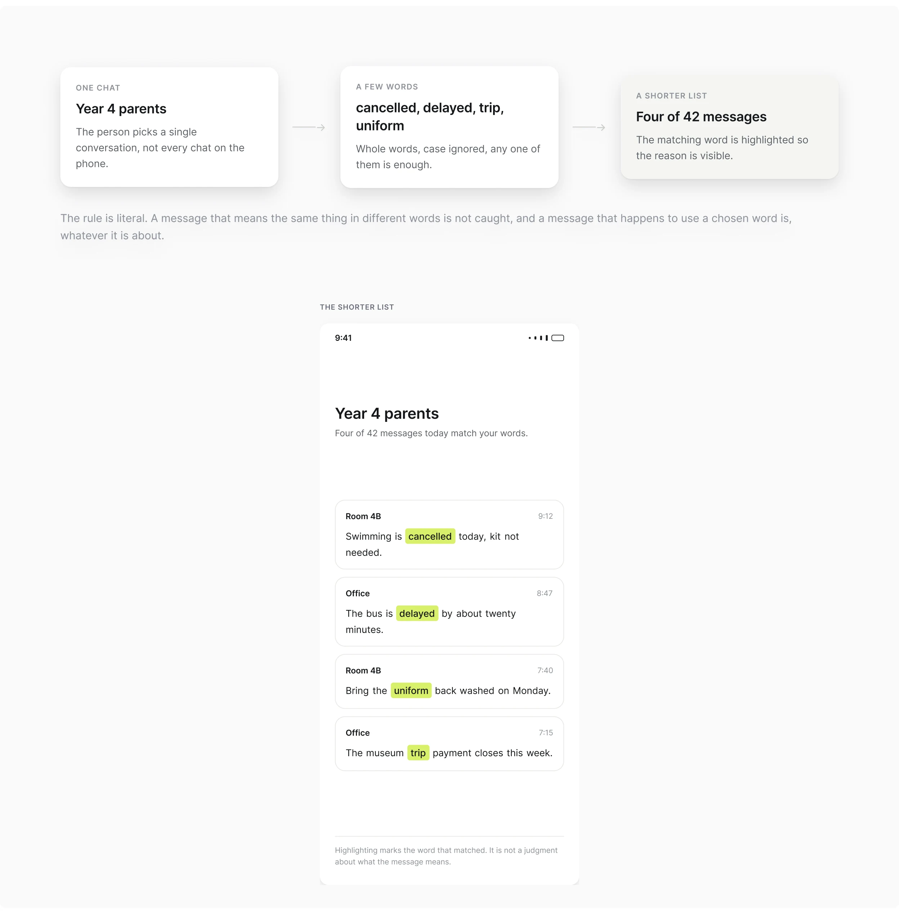
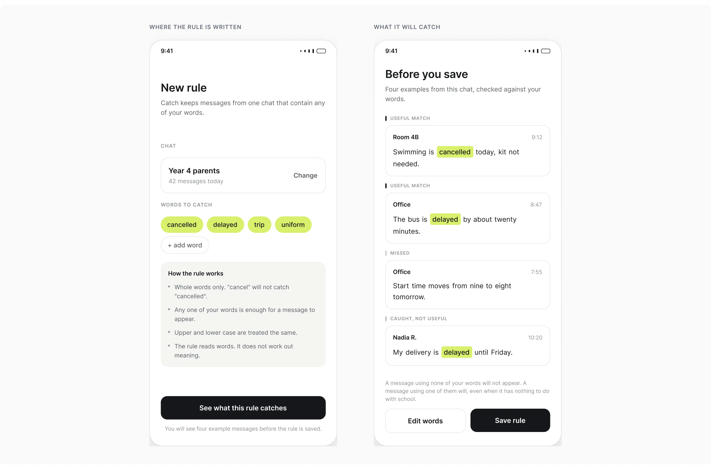
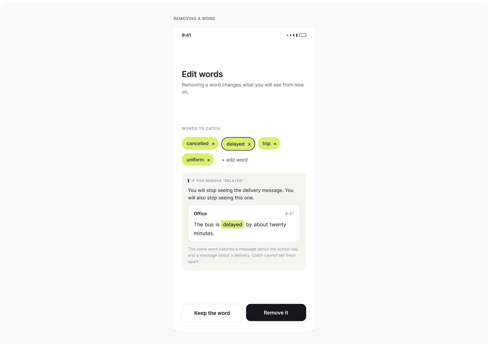
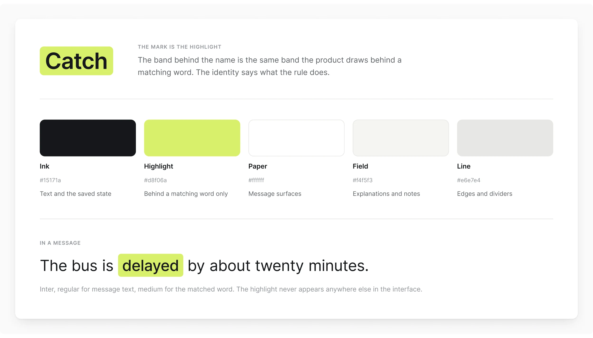

Concepto independiente / Android
Catch
Una lista más corta de un chat grupal que todavía necesitas seguir
Catch es un concepto para Android que conserva los mensajes que coinciden con unas pocas palabras elegidas por quien lo usa. Diseñé la regla, las pantallas y la identidad, con atención particular a mostrar qué captura la regla y qué se le escapa antes de guardarla.
Rol
Concepto de producto, diseño de la regla, diseño de interacción, UI e identidad.
Condiciones
La coincidencia está simulada.
El prototipo recorre la creación de la regla, la vista previa, la coincidencia y las ediciones. No hay ningún servicio de notificaciones conectado y nada está implementado.
Los mensajes fueron escritos.
Los cuatro mensajes de la vista previa se escribieron para mostrar dos coincidencias útiles, una omisión y una coincidencia irrelevante. Sus etiquetas describen los ejemplos, no la capacidad de la regla para leer significado.
Alcance del producto
Mantener el alcance en un chat y unas pocas palabras
El chat y las palabras
El proyecto se centra en un grupo del colegio: una conversación que alguien necesita seguir, con un pequeño conjunto de temas importantes entre muchos otros mensajes.
Qué hace y qué no hace
Catch no reemplaza al grupo ni reescribe su conversación. La persona elige un chat y unas pocas palabras; el texto que coincide aparece en una lista aparte, con la palabra responsable resaltada.

La decisión clave
Ver la regla antes de guardarla
La pantalla de vista previa
La regla no se puede guardar directamente desde la pantalla donde se escribe. La pantalla siguiente demuestra su comportamiento con cuatro mensajes escritos.

Cuatro mensajes escritos
Una clase cancelada se captura. Un bus escolar demorado se captura. Un cambio de las nueve a las ocho se pierde porque no usa ninguna de las palabras seleccionadas. Una entrega demorada también se captura, aunque no tenga nada que ver con el día escolar. Les di el mismo espacio a las coincidencias útiles, a la omisión y a la coincidencia suelta. No son errores excepcionales; muestran las limitaciones de este enfoque de coincidencia.
Comportamiento de la coincidencia
Elegir una regla explicable por encima del significado inferido
Qué hace la regla
La regla coincide con palabras completas, ignora mayúsculas y minúsculas, y conserva un mensaje cuando aparece cualquiera de las palabras elegidas. No infiere significado.
Por qué no el significado
Una coincidencia basada en significado podría recuperar un mensaje sobre un cambio de hora de inicio. Elegí la regla más simple para este concepto porque su comportamiento se puede enunciar y demostrar antes de que alguien dependa de ella. El costo es que la persona tiene que manejar por su cuenta las omisiones y las coincidencias irrelevantes.
Editar una regla
Explicar qué va a quitar una edición
El costo de una edición
El ejemplo de la entrega lleva a la siguiente decisión. Quitar "demorado" eliminaría esa coincidencia, pero también eliminaría la del bus demorado.

Dónde va la explicación
La explicación pone el costo junto a la edición. La persona debería entender qué está cediendo, no solo ver una opción para quitar una palabra.
Lenguaje visual
Dejar que el lenguaje visual explique la coincidencia
El resaltado
El resaltado detrás de una palabra conecta la lista de coincidencias con la identidad. Le da a la interfaz una forma consistente de mostrar por qué apareció un mensaje.

El resaltado fuera de la app
El mismo resaltado marca la palabra que coincidió donde sea que aparezca el mensaje: en la pantalla bloqueada y encima de lo que esté abierto en ese momento.
9:14
Martes, 14 de abril
Aula 4B
La natación está cancelada hoy, no hace falta llevar el equipo.
Secretaría El bus está retrasado unos veinte minutos.
Qué no afirma
En la vista previa, los ejemplos también explican dónde esa coincidencia es útil y dónde no. La regla en sí sigue operando sobre palabras, no sobre significado.
Entrega y alcance
Un prototipo que muestra sus propios límites
El prototipo conectado cubre la creación de la regla, la vista previa, los ejemplos de coincidencia y las ediciones. El comportamiento de coincidencia y de notificaciones está simulado.
- Un prototipo conectado en Figma con cuatro flujos recorribles
- Creación de la regla, vista previa, ejemplos de coincidencia y ediciones
- La regla, las pantallas y la identidad son mías
- SignalLoop y ShopSmartAutos se cubren en casos de estudio aparte